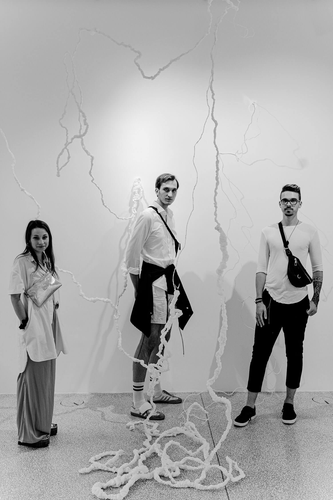
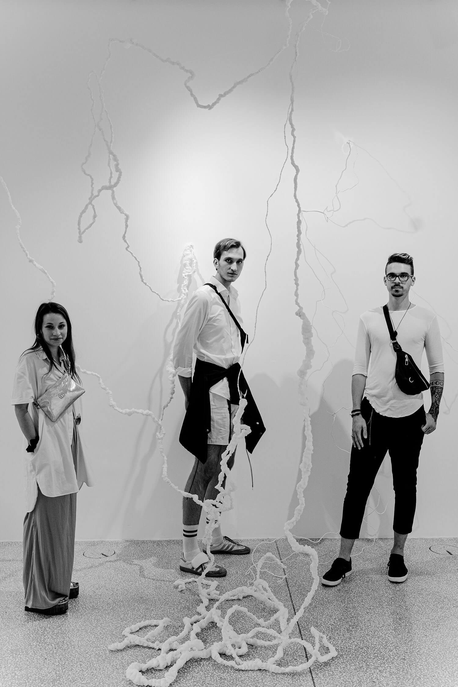

Urbano tkanje
 

Avtorji: Maja Zupanc, Martin Kaluža, Gašpar Marinič, Pia Wallner, Marija Okršlar, Lenart Šolar, Judita Kociper, Zoja Muhič / Mentorice: prof. Marija Jenko, izr. prof. mag. Katja Burger Kovič, asist. mag. Arijana Gadžijev / Tehniška sodelavka: Marjeta Čuk / Kurator MGBS: Vladimir Vidmar / 2020
Urban Weaving (group project) / Authors: Maja Zupanc, Martin Kaluža, Gašpar Marinič, Pia Wallner, Marija Okršlar, Lenart Šolar, Judita Kociper, Zoja Muhič / Mentors: Prof. Marija Jenko, Assoc. Prof. Katja Burger Kovič, Tch. Asst. Arijana Gadžijev / Technical assistant: Marjeta Čuk / Curator MGBS: Vladimir Vidmar / 2020
V dani situaciji je nemogoče ne izhajati iz konteksta časa, v katerem je projekt Urbano tkanje nastajal. Oblikovalski proces nastanka projekta je sovpadel z obdobjem pandemije covid-19, zaprtjem izobraževalnih institucij, s prepovedjo fizičnega stika, prepovedjo dotika. Namen projekta pa je tesno povezan z družbo – aktualizirati tekstil in njegove mnogotere vloge v današnji družbi, s katerim naj bi študentje prvega letnika oblikovanja tekstilij in oblačil pri predmetu Oblikovanje tekstilij v poletnem semestru izvedli vrsto mestnih inštalacij in preko skupnostne gradnje preoblikovali galerijski prostor. Dotik je za kreacijo tekstilije ključen.
In the current situation, starting from the context of the time when the Urban Weaving project was created is only possible. The design process that gave birth to the project coincides with the COVID-19 pandemic, the closure of educational institutions, a ban on physical contact and the outlawing of human touch. The project’s aim is closely tied to society: making textiles and their many roles relevant to today’s society. During the summer semester of the textile design course, first-year students of textile and clothing design held a series of urban installations and transformed the gallery space through communal building. Touch is vital to creating textiles.
Ročno tkanje, ki se materializira z (ne)utrudljivo repeticijo enega in istega giba roke in niti, je bilo umaknjeno v virtualni svet, v računalniške simulacije in preizkušanje na nivoju poskusnih vzorcev tkanja in maket. Čeprav nam je bilo pristno doživljanje urbanega in galerijskega prostora odvzeto, se je navkljub psihičnemu pretresanju naših teles iz tedna v teden v intimnem okolju domačega ognjišča vsakega posameznega študenta rodilo veliko.
Weaving by hand, the exhausting but exhilarating repetition of the same movement of hand and thread was shifted into the virtual world, into computer simulations, and experimenting with small looms and models. Although an authentic experience of the urban and gallery space was impossible, each student laboured week by week, despite the psychological stress in their bodies, in the intimate environment of hearth and home, to produce something special.
Postavitev Urbanega tkanja izhaja iz občutij, ki se porajajo v mestu, a so jih študenti prenesli in prilagodili arhitekturi galerijskega prostora. Tkanine v različnih stadijih naselijo osrednji del galerije. Krhka prostorska postavitev se zdi, kot da lebdi nad tlemi. Nastaja postopoma, ponekod vidimo le tok vzdolžnih niti, ki se na določenem mestu zgostijo in prepletejo s prečnimi nitmi v povezano površino, ki zavalovi po prostoru.
The Urban Weaving installation is driven by feelings born in the city but taken up by our students and tailored to the architecture of the gallery space. Fabrics at various stages occupy the heart of the gallery. The soft array feels like it is floating above the ground. It appears gradually, sometimes showing us the flow of warp alone, which here and there is thickened and interwoven with weft into a connected surface that ripples across the space.
Z vedno več občutka in želje po svobodnejšem, drznejšem in prostorsko obsežnejšem umetniškem izražanju svojih konceptov so se najprej urili v virtualnem naseljevanju po prostoru Male galerije. Njihova intuitivna tkanja, ki pa jih je vsekakor vodilo prodorno raziskovanje pomena in sporočilnosti prostorske tekstilije, so se počasi zapredla in se razraščala po tleh in kotih, se vila proti vrhu, zaobjela svetlobne žarke ter se nežno spuščala proti tlom, k zemlji. Nastala so pretkana drevesa, tkani organizmi, ki z nežnostjo beline in transparence subtilno naseljujejo galerijski prostor in vabijo obiskovalca v navidezni gozd.
With a growing sense of and desire for freer, more daring, and more expansive artistic expression of their concepts, they first practised in the virtual occupation of the Little Gallery space. Their intuitive weavings, which were driven by keen exploration of the meaning and communicativeness of spatial textiles, slowly entangled and spread across the ground and into the corners, reached for the ceiling, embraced the light shafts and gently fell towards the floor, to the earth. Woven organisms were born in the form of sly trees, whose soft whiteness and transparent forms have subtly taken possession of the gallery space, inviting the observer into what seems to be a forest.
Urbano tkanje tako sestavlja določeno galerijsko mikrofloro, ki v svojem svobodnem, a kontroliranem organskem razraščanju predstavlja večplastno alegorijo. V prvi vrsti jo lahko beremo kot alegorijo mesta, urbane džungle, ki vselej niha med racionalno organizacijo in življenjem, ki s svojo ustvarjalnostjo vrisuje lastna načela. V drugi vrsti je premislek bistva ustvarjalnosti kot prepleta virov, fragmentov in citatov – intertekstualnosti, ki združuje raznolike vnose ne glede na prej obstoječe hierarhije.
The Urban Weaving project has thus created a gallery microflora, which, in its free but controlled organic propagation, represents an allegory at multiple levels. At the first level, we can interpret it as an allegory for the city, the urban jungle, which is ever torn between efficient organisation on one side and life on the other, whose creativity sketches out its principles. At the second level lies deliberation of the essence of creativity as the interplay of sources, fragments and citations: the intertextuality that combines diverse inputs irrespective of the existing hierarchy.
Zato je v teh časih kolektivno delo razstave Urbano tkanje predvsem opomnik, da je javni prostor predmet naše kreacije in osmišljanja, ki ju je treba neutrudno in vsakič znova postavljati nasproti poskusom njegovega avtoritarnega prilaščanja.
The collective work of the Urban Weaving exhibition is, more than anything else, a reminder that public space is something we create and endow with meaning and needs to be relentlessly defended again and again from authoritarian attempts to take possession of it.